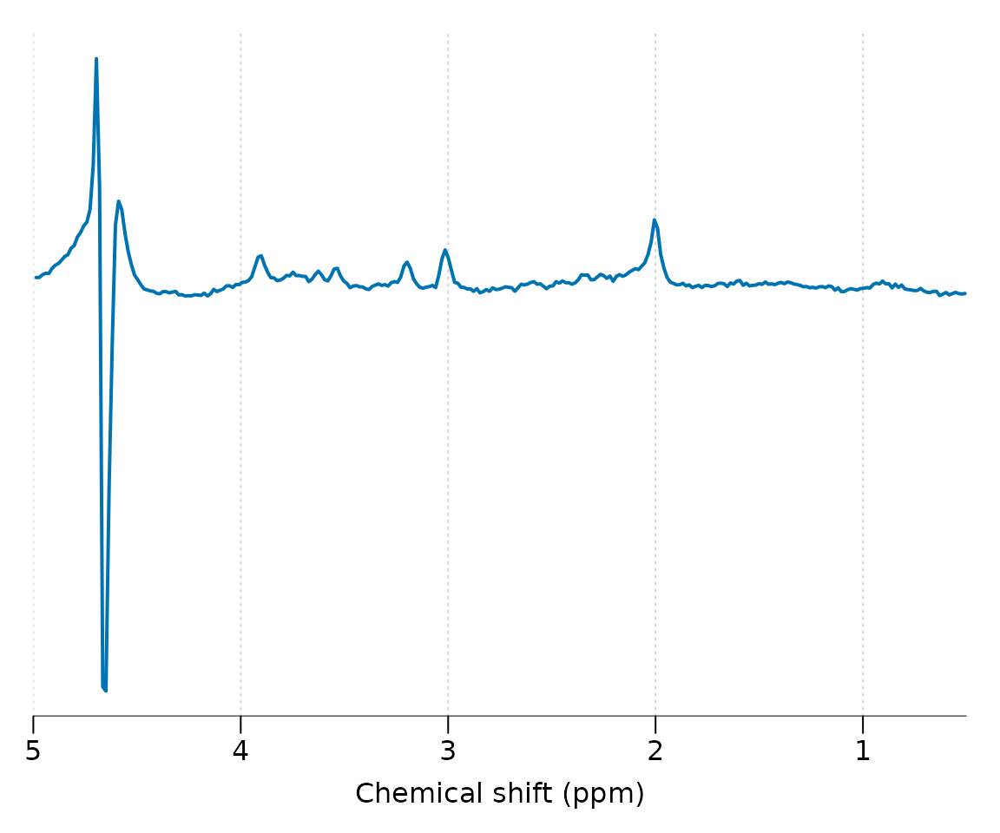
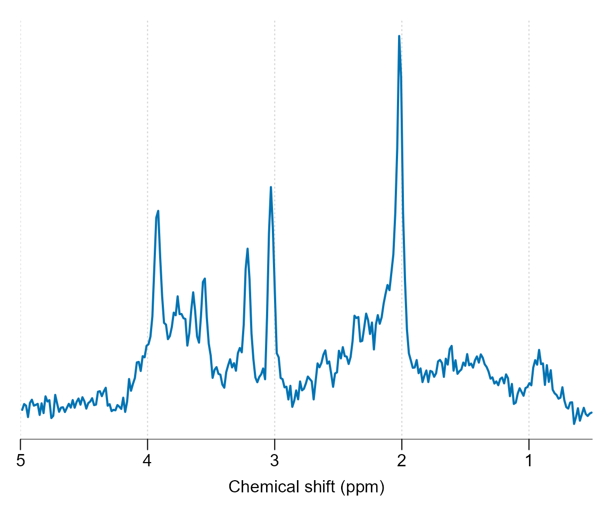
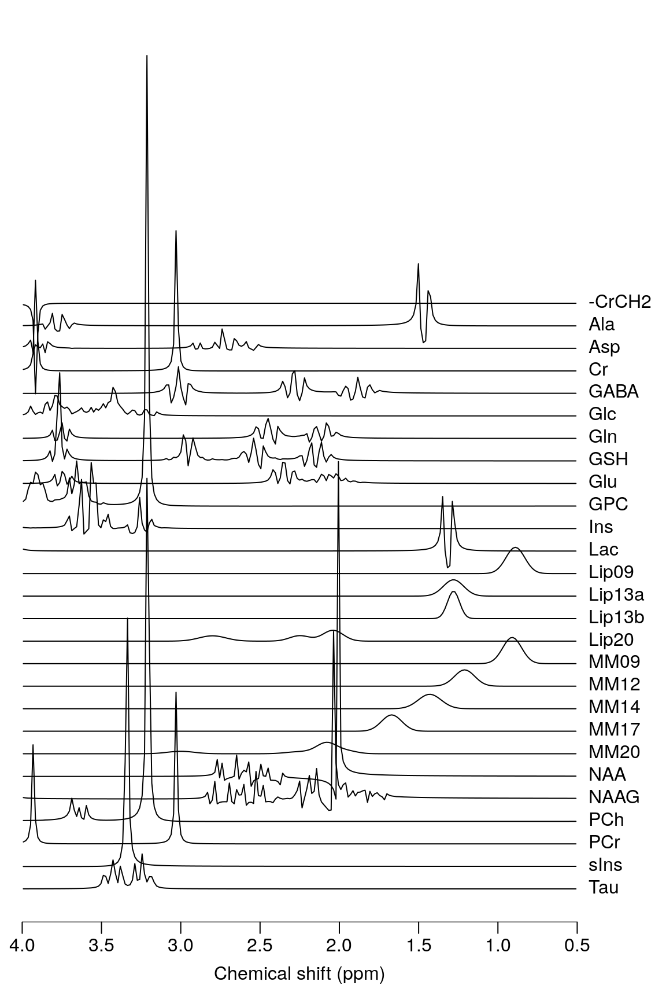
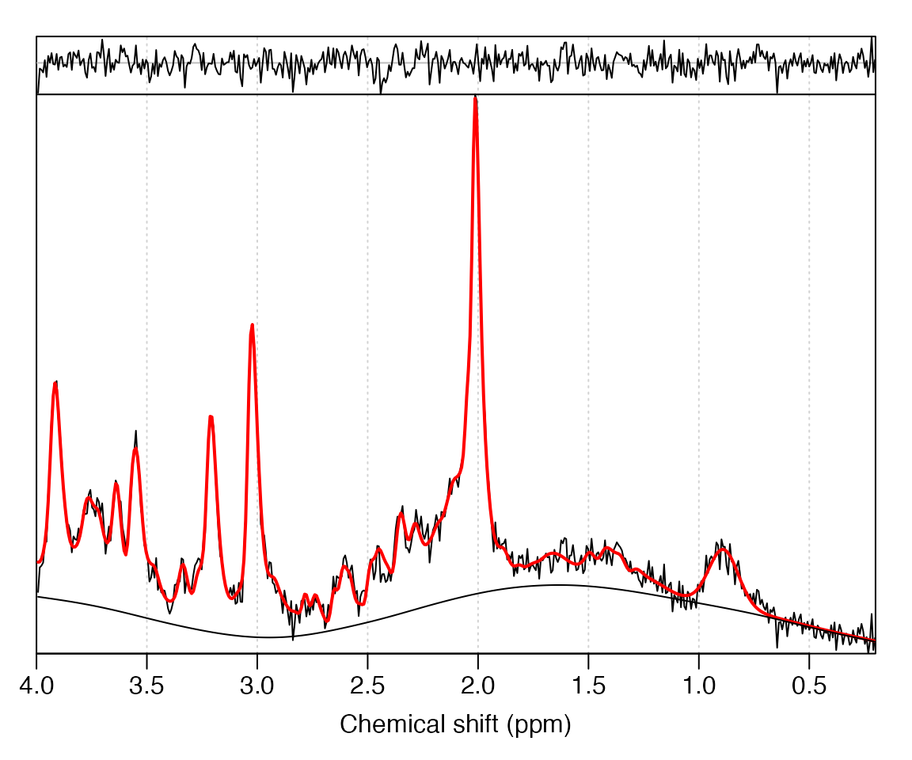

Load the spant package:
Get the path to a data file included with spant:
fname <- system.file("extdata", "philips_spar_sdat_WS.SDAT", package = "spant")Read the file and save to the workspace as mrs_data:
mrs_data <- read_mrs(fname, format = "spar_sdat")Output some basic information about the data:
print(mrs_data)
#> MRS Data Parameters
#> ----------------------------------
#> Trans. freq (MHz) : 127.7861
#> FID data points : 1024
#> X,Y,Z dimensions : 1x1x1
#> Dynamics : 1
#> Coils : 1
#> Voxel resolution (mm) : 20x20x20
#> Sampling frequency (Hz) : 2000
#> Reference freq. (ppm) : 4.65
#> Nucleus : 1H
#> Spectral domain : FALSEPlot the spectral region between 5 and 0.5 ppm:

Apply a HSVD filter to the residual water region and align the spectrum to the tNAA resonance at 2.01 ppm:

Simulate a typical basis set for short TE brain analysis, print some basic information and plot:
basis <- sim_basis_1h_brain_press(mrs_proc)
print(basis)
#> Basis set parameters
#> -------------------------------
#> Trans. freq (MHz) : 127.786142
#> Data points : 1024
#> Sampling frequency (Hz) : 2000
#> Elements : 27
#>
#> Names
#> -------------------------------
#> -CrCH2,Ala,Asp,Cr,GABA,Glc,Gln,
#> GSH,Glu,GPC,Ins,Lac,Lip09,
#> Lip13a,Lip13b,Lip20,MM09,MM12,
#> MM14,MM17,MM20,NAA,NAAG,PCh,
#> PCr,sIns,Tau
stackplot(basis, xlim = c(4, 0.5), labels = basis$names, y_offset = 5)
Perform ABfit analysis of the processed data (mrs_proc):
fit_res <- fit_mrs(mrs_proc, basis)Plot the fit result:
plot(fit_res)
Extract the estimated amplitudes from fit_res and print as a ratio to total-creatine in column format:
amps <- fit_amps(fit_res)
print(t(amps / amps$tCr))
#> [,1]
#> X.CrCH2 0.00000000
#> Ala 0.15476730
#> Asp 0.54906740
#> Cr 0.66221767
#> GABA 0.27852250
#> Glc 0.06600040
#> Gln 0.07751432
#> GSH 0.35717583
#> Glu 1.10917897
#> GPC 0.26528264
#> Ins 0.99226930
#> Lac 0.09785099
#> Lip09 0.38435005
#> Lip13a 0.04616276
#> Lip13b 0.00000000
#> Lip20 0.00000000
#> MM09 0.16767613
#> MM12 0.11328011
#> MM14 0.44650271
#> MM17 0.42590445
#> MM20 1.55564347
#> NAA 0.97736509
#> NAAG 0.26490372
#> PCh 0.00000000
#> PCr 0.33778233
#> sIns 0.10912004
#> Tau 0.00000000
#> tNAA 1.24226881
#> tCr 1.00000000
#> tCho 0.26528264
#> Glx 1.18669329
#> tLM09 0.55202618
#> tLM13 0.60594559
#> tLM20 1.55564347